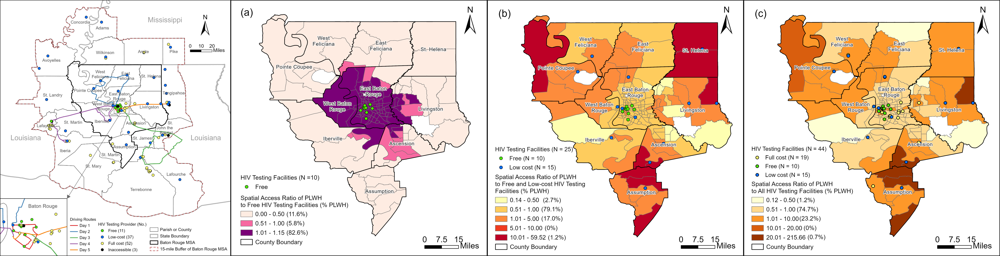
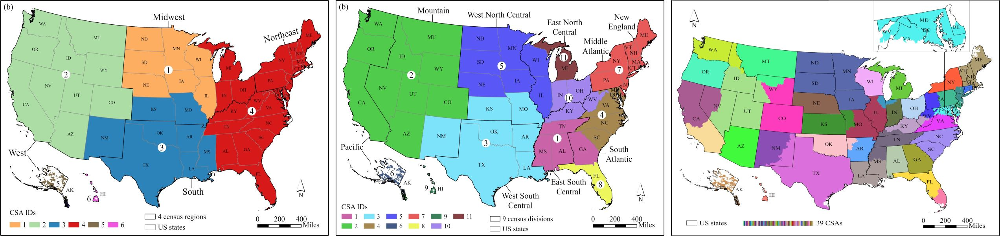
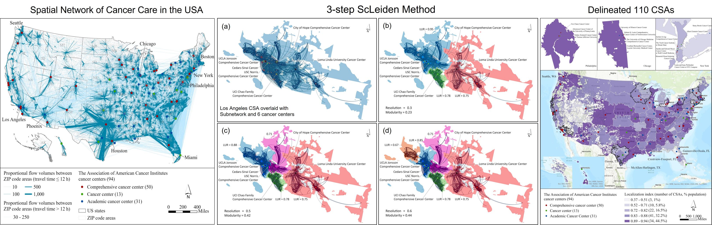
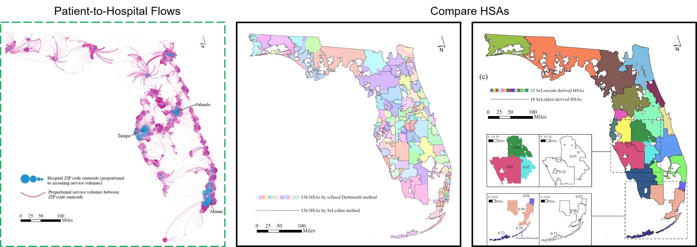
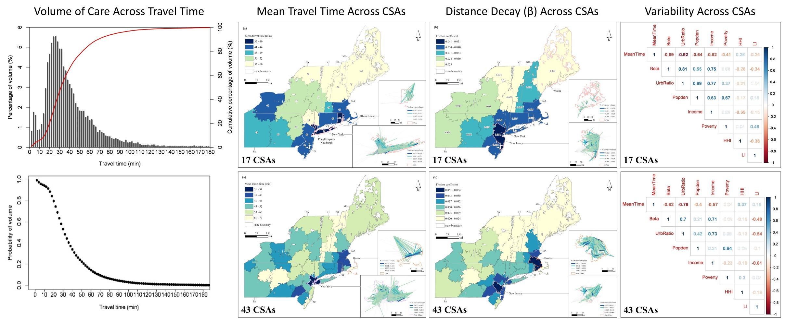
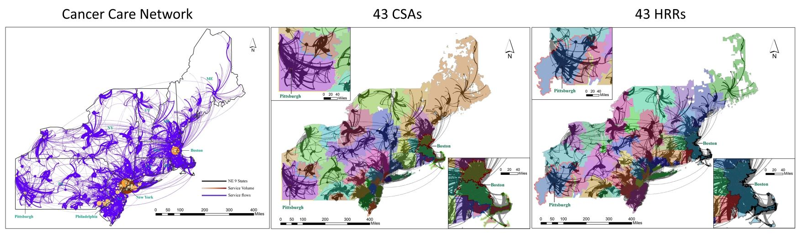
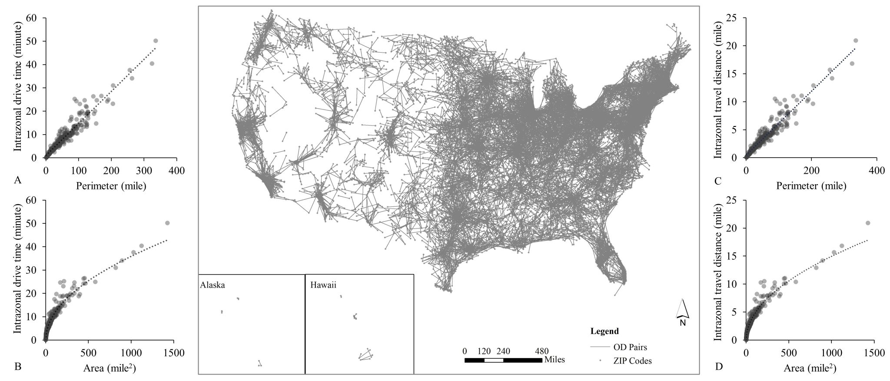
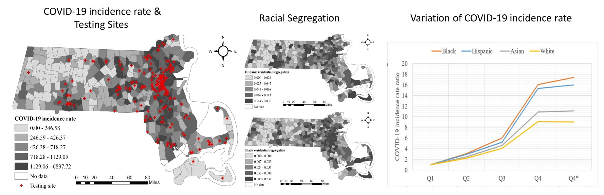

Changzhen Wang
Welcome to my page! I am currently a Dean's Postdoctoral Research Associate in the Department of Geography at the University of Alabama. I received my PhD in Geography from Louisiana State University (LSU) under the direction of Dr. Fahui Wang!
Prior to that, I was a GIS project manager and developer at Wuhan Land Use and Urban Spatial Planning Research Center (WLSP). In the meantime, I served as a consultant at UN-Habitat in Nairobi, Kenya.
I obtained my Master’s degree in Cartography and GIS from Wuhan University, during which I was a research scholar at the University of Michigan, Ann Arbor. I received my Bachelor’s degree in GIS from Southwest Jiaotong University in Chengdu, China.
Selected Publications
Measuring Spatial Accessibility of Vulnerable Population to HIV Testing Facilities in the Baton Rouge Metropolitan Statistical Area, Louisiana.
AIDs and Behavior , 2024
Changzhen Wang ,
Alina Prigozhina,
Michael Leitner

Overlapping Cancer Service Areas: Delineation and Implications.
Transactions in GIS , 2024 (J. Warren Nystrom Award finallist 2024) Changzhen Wang ,
Tracy Onega ,
Fahui Wang
Multiscale Analysis of Cancer Service Areas in the United States.
Spatial and Spatio-temporal Epidemiology , 2022
Changzhen Wang ,
Tracy Onega ,
Fahui Wang

Delineation of Cancer Service Areas Anchored by Major Cancer Centers in the United States.
Cancer Research Communications , 2022 (Peter Gould Student Paper Award) Changzhen Wang ,
Fahui Wang ,
Tracy Onega

GIS Automated Delineation of Hospital Service Areas. Boca Raton, FL: CRC Press. ISBN 9780367202286 , 2021
(Book) (Video Tutorial)
Fahui Wang ,
Changzhen Wang
Your browser does not support the video tag.
GIS-automated Delineation of Hospital Service Areas in Florida: From Dartmouth Method to Network Community Detection Methods.
Annals of GIS , 2022 (CPGIS Best Student Paper) (Best Paper Award) Changzhen Wang ,
Fahui Wang
Your browser does not support the video tag.
Your browser does not support the video tag.
Your browser does not support the video tag.

Spatial Behavior of Cancer Care Utilization in Distance Decay in the Northeast Region of the U.S.
Travel Behaviour and Society , 2021
Changzhen Wang ,
Fahui Wang ,
Tracy Onega

Network Optimization Approach to Delineating Health Care Service Areas: Spatially Constrained Louvain and Leiden Algorithms.
Transactions in GIS , 2021
Changzhen Wang ,
Fahui Wang ,
Tracy Onega
Automated Delineation of Cancer Service Areas in Northeast Region of the United States: A Network Optimization Approach.
Spatial and Spatio-temporal Epidemiology , 2020
Fahui Wang ,
Changzhen Wang ,
Yujie Hu ,
Julie Welss ,
Jennifer Alford-Teaster ,
Tracy Onega

Estimating a Large Drive Time Matrix Between ZIP Codes in the United States: A Differential Sampling Approach.
Journal of Transport Geography , 2020
Yujie Hu ,
Changzhen Wang ,
Ruiyang Li ,
Fahui Wang

Racial segregation, testing site access, and COVID-19 incidence rate in Massachusetts, USA.
International Journal of Environment Research and Public Health , 2020
Tao Hu ,
Yue Han ,
Changzhen Wang ,
Bing She ,
Xinyue Ye ,
Regina Liu ,
Xinyan Zhu ,
Weihe Wendy Guan ,
Shuming Bao


{kind=link}